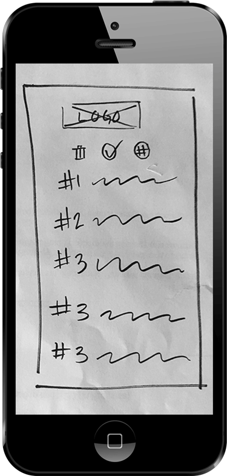

I developed Forget Me Not as a side project over the course of several weeks. I was responsible for all aspects of the research, design, and creation of an interactive prototype. I used Illustrator, Sketch, and Invision.
There are many tools for link saving, but no single leading platform. Why? The core issue: all are link “graveyards”, like the pocket dashboard below. There is no indication of priority, so it's not clear what to read first.
Forget Me Not makes it easy for users to save and remember what’s in their links. Forget Me Not is a tool optimized for reading and remembering links, not just saving them

I began with a survey to answer some key questions:
How are people saving links?
What works?
What doesn’t?
What do they want to change about it?
The survey got:
To dig deeper, I looked at respondents who saved a lot of articles online. Their responses surprised me.
Email isn’t designed for link saving or reading, why was it so popular?
What were all these tools missing?
The survey results show two primary types of users. These became personas:

24
B.S. in Communications, young marketer living in NYC

20
College Sophomore in Philadelphia
The survey showed that the leading link saving methods were email, Safari Reading list, and Google bookmarks. A SWOT analysis revealed some interesting opportunities:

The survey and personas revealed that there were four core functions the platform needed to provide. These became user stories:
Before adding the more specific user stories, I researched reading retention techniques so that I could identify clear steps users could take to remember what they saved. The top techniques included visualizing what you read, articulating how
the information relates to what you already know, and identifying the 3 main points. I created a retention question sequence around these techniques.
USER FLOWS
From my survey I wanted to avoid the mistakes of other link saving tools. These tools asked users to download yet another app and learn new ways of storing and organizing links. They didn't seem to ask why someone would want save a link, or ask how
the act of saving could provide genuine value to the user. The survey made it clear that all these link saving and organization tools were missing out on helping people actually read what they saved. What if people could learn from
all the links they saved? What if they had a tool that worked within the way they were already saving links?
The user flows reflected how people were already saving links, while using the science of reading retention.


The interface design began with some sketches.

These sketches became the first round of wireframes. Those became an interactive prototype, and were tested with 3 separate users.

In thinking about how a company might create an MVP, it was clear a responsive website would be the best starting point. Building a website would be the fastest way to see if there was a demand for a tool like Forget Me Not, and it would work on all devices. The wireframes were changed to make this clear.
Several ideas came up over and over as Forget Me Not developed:
I used these to develop a visual identity for Forget Me Not, beginning with mind maps and moodboards and ending with a full brand guide that included copy tone, color palette, logos, and typefaces.
After the branding, the first round of hi-fi mockups was finished too.

Usability testing along with a few more user tests helped to refine some key design decisions.


The copy in the onboarding sequence was refined along with some other visual tweaks.

After more brainstorming, I realized that I could add two buttons to the top menu. By making them clearly different from the navigation bar and pinning the menu to the top of the screen, users could tap “remember” or “archive” at the moment they were finished with the link, even if they hadn’t scrolled to the bottom. This maximized the chance they would do the retention questions.
Two final user tests provided the feedback for the final version of the prototype. The label and priority colors were changed and the copy in the onboarding and saving sequences was refined.
Forget Me Not was now ready!